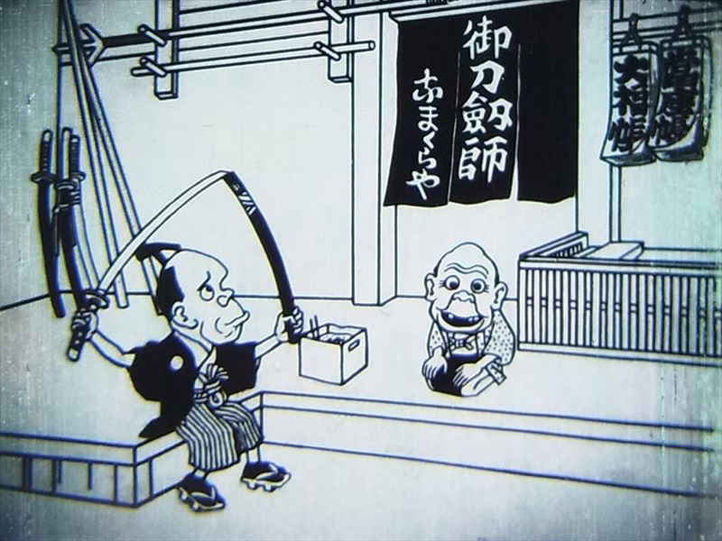
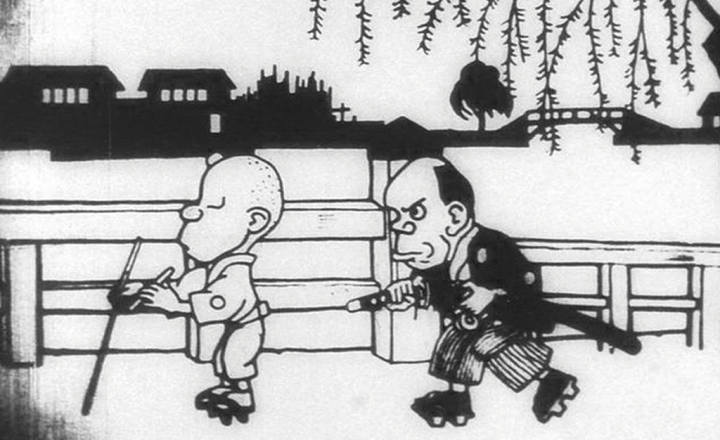

O primeiro anime do mundo é considerado Katsudō Shashin, também conhecido como Namakura Gatana, um curta-metragem de animação japonesa criado em 1917 por Oten Shimokawa. O filme tem aproximadamente 50 quadros e 3 minutos de duração e mostra um samurai que compra uma espada cega.
Imagem ilustrativa...
O segundo anime do mundo
em termos de lançamento como filme, foi "As Aventuras do Príncipe Achmed" (1926), da alemã Lotte Reiniger e do franco-húngaro Berthold Bartosch. Já o segundo anime a ser lançado como série de televisão foi "Astro Boy" (1963), de Osamu Tezuka.
O termo "anime" se refere à animação japonesa, que se distingue por seu estilo visual característico, personagens com olhos grandes e traços expressivos. O anime também tem uma rica tradição de narrativas, gêneros e estilos, que vão desde comédia e aventura até ficção científica e fantasia. Conhecido como o "Deus do Mangá", foi fundamental para a popularização do anime, especialmente com a série Astro Boy (1963). Outros animadores importantes no início do desenvolvimento do anime foram Seitaro Kitayama e Oten Shimokawa, que também criaram animações no início do século XX.